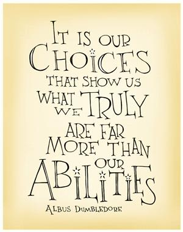

| Home | Leadership | Teaching and Learning | Instructional Design | Multimedia Development | Professional Development | Resume |
|---|
|  | C-4: Technology Coaches conduct needs assessments, develop technology-related professional learning programs, and evaluate the impact on instructional practice and student learning. |
|---|
| Course Artifacts | Field Experience Artifacts |
|---|---|
|
The link above leads you to the Mini-Projects 1-6 home page. Through these assignments, I learned how to use html code to create a website. We also learned how to include multimedia software tools within these pages. (Course: Multimedia and Hypermedia) |
This video was created using ScreenCastify with our instructional coach. We used this to share with the staff to introduce them to a new tool for the classroom called No Red Ink. I am in the audio to explain to the teachers how to use the website and some new strategies for using the data collected by the website. |
|
This is the link to the homepage of the website you are currently viewing. This was completed using html code for a variety of reasons. One reason was as a part of my graduation requirements within the Master's Program of Instructional Technology. However, it was also created to showcase my skills as an educator and my newly learned skills within html. (Course: Multimedia and Hypermedia) |
|
WBLS Project Description to be updated at the completion of the course in Summer 2019. (Course: Web-Based Learning Systems) |
Video Demonstration for Google Classroom I have recently switched to an online classroom. I use Google Classroom for all assignments and announcements. My students are able to access it easily and frequently. We use Google Classroom on a daily basis in my class, from stations to writing assignments. The video above is a screenrecording of demonstrating Google Classroom from the teacher's perspective. |
| Home | Leadership | Teaching and Learning | Instructional Design | Multimedia Development | Professional Development | Resume |
|---|
|
|
| Last Revised: March 2019 - ©Elizabeth Rinkes |